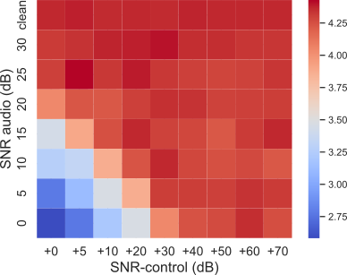
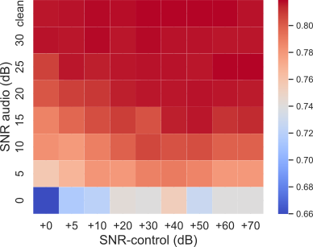

AnCoGen: Analysis, Control and Generation of Speech with a Masked Autoencoder
Article | Code (will be released soon)
Abstract
This article introduces AnCoGen, a novel method that leverages masked autoencoders to unify the
analysis, control, and generation of audio speech within a single model. AnCoGen can analyze speech
by estimating key attributes such as speaker identity, pitch, content, loudness, signal-to-noise ratio,
and clarity index. Additionally, it can generate speech from these attributes and allows for precise
control of the synthesized speech by modifying them. Extensive experiments demonstrate AnCoGen's
effectiveness across various applications, including anaylsis-resynthesis, pitch estimation, pitch
manipulation, and speech enhancement.
Analysis
We perform an analysis process on audio speech data, which involves encoding audio speech sequences (\(\mathbf{x}\) ) and decoding the the attributes (\(\mathbf{A}_{1:6}\)).
(Scroll to the right to see the other attributes) In each of these figures, the blue outline represents the original attributes and the red represents the prediction of our approach (AnCoGen).


Analysis-generation
We present some qualitative results of an analysis-generation process on audio speech data. The analysis involves encoding audio speech sequences (\(\mathbf{x}\) ) and decoding the attributes (\(\mathbf{A}_{1:6}\) ). Subsequently, the generation step consists of generating the audio sequence (\(\mathbf{x}\) ) from these factors obtained without any modification, intending to reconstruct the input sequence faithfully.
|
Original |
Reconstruction with AnCoGeN (ours) |
Analysis-control-generation
1- Speech enhancement
How to do speech enhancement with AnCoGen? For that, we perform an analysis-control-generation process on noisy audio speech data. The analysis involves encoding noised audio speech sequences (\(\mathbf{x}\)) and decoding the attributes (\(\mathbf{A}_{1:6}\)). Subsequently, the control step consists of controlling and manipulating the SNR. Concretely, we increase the value of the SNR by +40 dB. Lastly, the generation step synthesizes the audio sequence (\(\mathbf{x}\)) from these factors modified in order to denoise the audio speech signal.
|
Noised |
Reconstruction |
Original |
What impact does the SNR control value have on speech enhancement? AnCoGen operates through an analysis-control-synthesis process. In the control step, we adjust SNR. The figure below illustrates the effect of the SNR control value, showing two metrics (MOS and STOI) to examine the correlation between the SNR of the noisy signal and the SNR control value. The x-axis represents the SNR of the noisy audio signal, while the y-axis represents the SNR control value. The findings indicate that increasing the SNR control value leads to greater denoising of the speech audio signal.
|  |  |
2- Pitch manipulation
How to do pitch manipulation with AnCoGen? For that, we perform an analysis-control-generation process on audio speech data.
The analysis involves encoding audio speech sequences (\(\mathbf{x}\))
and decoding the attributes (\(\mathbf{A}_{1:6}\)).
Subsequently, the control step consists of controlling and manipulating the pitch.
Lastly, the generation step synthesizes the audio sequence (\(\mathbf{x}\)) with the modified pitch.
📢 The paper does not include detailed discussions on the applications of dereverberation and voice conversion. However, audio examples illustrating these applications are provided in the following sections.
3- De-reverberationHow to do speech de-reverberation with AnCoGen? For that, we perform an analysis-control-generation process on noisy audio speech data. The analysis involves encoding noised audio speech sequences (\(\mathbf{x}\)) and decoding the attributes (\(\mathbf{A}_{1:6}\)). Subsequently, the control step consists of controlling and manipulating the C50. Concretely, we increase the value of the C50 by +50. Lastly, the generation step synthesizes the audio sequence (\(\mathbf{x}\)) from these factors modified in order to denoise the audio speech signal.
|
Noised |
Reconstruction (ours) |
Original |
4- Voice Conversion
AnCoGen functions as a voice conversion tool via the analysis-control-generation process between source signals and target signals. In the control step, we switch only the identity information from the target to the source signal, all other factors of variation of the source are preserved.
|
Target |
Source |
Voice conversion with AnCoGen |